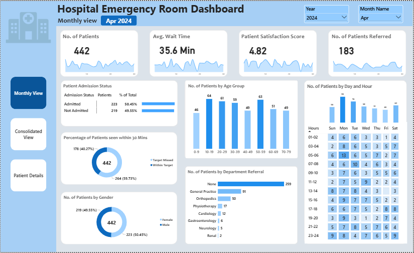
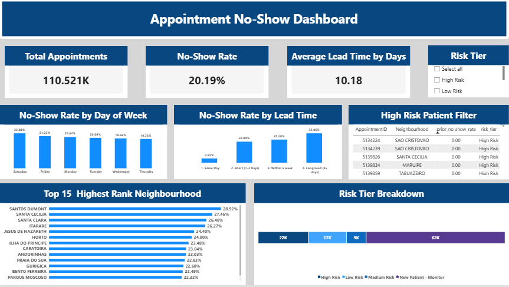
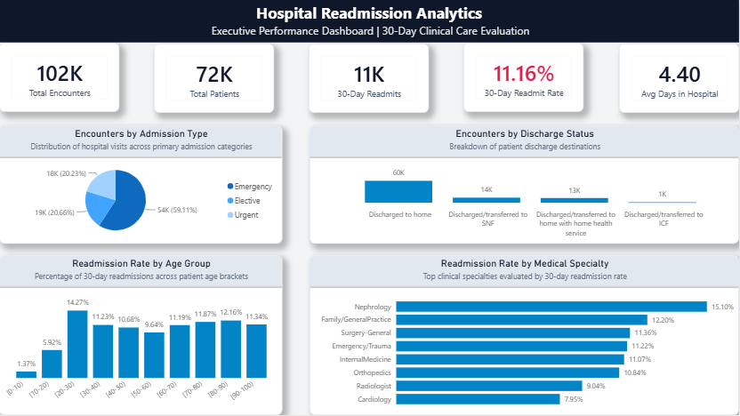

HEALTHCARE OPERATIONS01Hospital Emergency Room Dashboard
An operational view of emergency department activity, patient flow, waiting times, and admissions.
Power BIDAXPower Query
Explore project ↗HEALTHCARE · DATA · INFORMATICS
Healthcare Data Analyst | Health Informatics Specialist
Transforming Healthcare Data into Meaningful Insights.
I connect clinical knowledge with data analysis to explore healthcare challenges, uncover meaningful patterns, and support better-informed decisions.
Curiosity for data.
Commitment to healthcare.
Building at the intersection of clinical practice, analytics, and emerging medical AI.
01 — ABOUT
I am a nursing graduate building a career at the intersection of healthcare and data. My clinical education shapes how I approach healthcare questions, while my growing skills in SQL, Python, Excel, and Power BI help me turn data into clear, practical insights. Through portfolio projects in hospital operations, appointment attendance, and readmission analytics, I explore how structured analysis can support quality improvement and better-informed decisions. My long-term goal is to contribute to research in data science and artificial intelligence in medicine.
02 — SELECTED WORK
Healthcare questions, explored through data, SQL, and visualization.

HEALTHCARE OPERATIONS01An operational view of emergency department activity, patient flow, waiting times, and admissions.

PATIENT ATTENDANCE02Investigating attendance patterns and appointment lead time to identify where missed visits are more common.

READMISSION ANALYTICS03Analyzing hospital encounters and readmission patterns to explore a key measure of care transitions.
Project findings are based on their respective datasets. Explore each repository for methodology, limitations, and supporting files.
03 — WHAT I CAN HELP WITH
Practical analysis and clear communication, with a healthcare-aware perspective.
Cleaning, exploring, and communicating data findings.
↗Power BI reports designed to make key measures easier to explore.
↗Exploring clinical and operational questions through structured analysis.
↗Querying, validating, and summarizing relational data.
↗Presenting healthcare patterns with accessible visuals.
↗04 — EXPERIENCE
Experience in healthcare starts with understanding the people and processes behind the data.
Assiut University Hospitals · Egypt
Clinical training across hospital settings, developing familiarity with patient care, healthcare workflows, and the importance of quality and safety.
Clinical Training05 — EDUCATION
Faculty of Nursing · Assiut University
Grade: 76% — B
06 — SKILLS & TOOLS
Skills are presented in context, reflecting tools and knowledge developed through study and portfolio work.
Python · C++ · C#
SQL Server · SQL · MySQL
Excel · Data Cleaning · Pivot Tables · Power Query
Power BI · DAX · Matplotlib · Seaborn
NumPy · Pandas · Jupyter Notebook · Google Colab
Nursing & Clinical Knowledge · Healthcare Workflows · Patient Safety · ICD-10 / ICD-11
Git · GitHub · VS Code · SQL Server Management Studio
07 — CONTINUOUS LEARNING
A growing record of formal learning, courses, and technical development.
Certificates will be added with their issuer, completion date, and supporting evidence.
08 — NEWS & UPDATES
A timeline of completed learning milestones and healthcare analytics projects.
Completed three portfolio projects: Hospital Emergency Room Dashboard, Medical Appointment No-Shows, and Hospital Readmission Analytics.
COMPLETEDCompleted learning in Excel, MySQL, Power BI, NumPy, Pandas, Matplotlib, and Seaborn.
COMPLETEDA gap year in the learning timeline.
Completed learning in C#, Databases, SQL Server, and Responsive Web Design.
COMPLETEDCompleted learning in C++, Object-Oriented Programming (OOP), Data Structures, and Problem Solving.
COMPLETED09 — A NOTE TO REMEMBER
A meaningful note from an English teacher, kept as a reminder of the people who encourage us along the way.
MR. AYMAN AWAD — MY ENGLISH TEACHER · 27 AUGUST 2020
Original note image and transcription will be added when the source image is available.
10 — VISITORS
Visitor statistics will appear here after a privacy-conscious analytics service is configured.
No visitor-location data is displayed until collection and privacy handling are implemented and tested.
11 — CONTACT
Have a project, opportunity, or idea related to healthcare data? I’d be glad to connect.
THE NEXT QUESTION IS ALWAYS WORTH ASKING